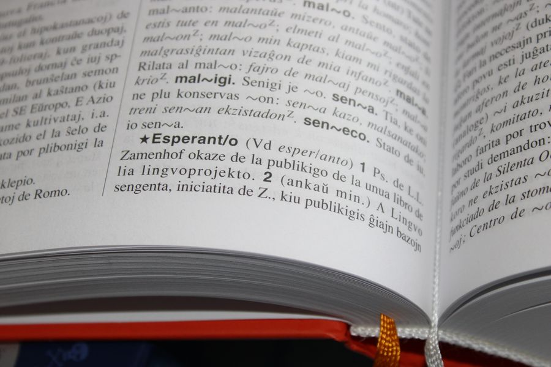

你不知道的德国 · 36
🔤 德语可以
无限长
Komposita · 63 个字母的法规词 · Duden 里最长的是 36 个字母
🔧 名词拼装机器
德语造新词，不靠借词也不靠造词根，靠拼：把已有的名词一个接一个摞起来就行。der Kühlschrank（冰箱）= kühl（冷）+ Schrank（柜子）；das Wartezimmer（候诊室）= warten（等）+ Zimmer（房间）。
这种拼法叫 Kompositum（复合词）。理论上没有长度上限——你想拼多长就多长，只要听的人愿意听。所以德语天天在长新词，词典永远追不上。
🔧 最省事的是：词义基本是白送的。Hand（手）+ Schuh（鞋）= Handschuh，但它不是「手鞋」，是手套——德语不急着造新字，只换组合方式。
🇩🇪 Auf Deutsch
Das Kompositum ist das wichtigste Werkzeug der deutschen Wortbildung: Man klebt einfach vorhandene Wörter aneinander – Kühlschrank = kühl + Schrank, Handschuh = Hand + Schuh. Nach oben gibt es keine Grenze.
📜 63 个字母，真的写在法律里
1999 年，梅克伦堡-前波美拉尼亚州为了防疯牛病（BSE）立了一部法，名字里有这么一串：Rindfleischetikettierungsüberwachungsaufgabenübertragungsgesetz——63 个字母，是德语里真实存在过的最长单词。
它的意思是「牛肉标签监督任务转移法」。2013 年 5 月，州议会把它废除了：欧盟改了规定，屠宰场的 BSE 检测取消，这部只有六条的法就没用了。
📜 最长词的纪录一直在换人。前一任是 Grundstücksverkehrsgenehmigungszuständigkeitsübertragungsverordnung（67 个字母，2007 年废止）。而 Duden 词典里收录的最长词只有 36 个字母：Kraftfahrzeug-Haftpflichtversicherung（机动车责任险）——中间还带个连字符。
🇩🇪 Auf Deutsch
1999 gab es in Mecklenburg-Vorpommern ein Gesetz mit einem 63 Buchstaben langen Namen: das Rindfleischetikettierungsüberwachungsaufgabenübertragungsgesetz. 2013 wurde es aufgehoben – das längste Wort der deutschen Sprache verschwand aus dem Gesetzbuch.
✍️ 三个 f 的那场改革
有个经典长词：Donaudampfschifffahrtsgesellschaftskapitän（多瑙河蒸汽船航运公司船长）。1996 年德语正字法改革（Rechtschreibreform）之后，它从两个 f 变成了三个 f——因为 Schiff（船）+ Fahrt（航行）按新规则要保留全部字母。
这类改革在德国吵了很多年，报纸专门开版面互骂。2006 年又出了一次「改革后的改革」，把几条最惹人烦的规则放宽回去。
✍️ 三个相同辅音连着写，在改革前是错的。所以 1996 年前后，德国人连「船运」这个词怎么拼都能吵上头条——这不是语法题，是身份题。
🇩🇪 Auf Deutsch
Das bekannteste Beispiel ist der Donaudampfschifffahrtsgesellschaftskapitän. Seit der Rechtschreibreform von 1996 schreibt man Schifffahrt mit drei f – vorher nur mit zwei.
⚧ 长词的性别，看最后一个词
德语名词有性别，那拼起来的长词算阴性阳性？规则很简单：最后一个词的性别，就是整个词的性别。
das Grundstück（地产，中性）+ der Verkehr（交通，阳性）→ der Grundstücksverkehr。die Arbeit + der Platz → der Arbeitsplatz。所以看词尾就能猜出它带 der、die 还是 das。
⚧ 这也解释了一个让初学者崩溃的问题：die Sonne（太阳，阴性）+ der Schein（光，阳性）→ der Sonnenschein。拼完之后性别跟着尾巴走，跟前面的词毫无关系。
🇩🇪 Auf Deutsch
Bei Komposita bestimmt das letzte Wort das Genus: die Arbeit + der Platz = der Arbeitsplatz. Deshalb kann man am Wortende oft ablesen, ob es der, die oder das heißt.
🔗 那个看不见的 s
拼词时中间常会多出一个 Fugen-s（连接音 s）：die Arbeit + der Platz → der Arbeitsplatz，die Liebe + der Brief → der Liebesbrief。
加不加、加哪个，没有铁律。有的词两种写法都常见，只能一个一个记——所以德语词典里连这种细节都要查。
🔗 德国小孩上学要专门练这个。母语者也说不清为什么是 Arbeitsplatz 而不是 Arbeitplatz——他们只知道「不这么写就是错的」。这就是所谓的 Sprachgefühl（语感）。
🇩🇪 Auf Deutsch
Viele Komposita bekommen ein Fugen-s: Arbeit + Platz = Arbeitsplatz, Liebe + Brief = Liebesbrief. Eine feste Regel gibt es nicht – man muss es lernen.
🗣️ 现实里没人这么说话
长词听起来吓人，但德国人日常用的复合词其实很短：Kühlschrank、Wartezimmer、Handschuh、Fußball、Haustür。真正 30 个字母以上的词，几乎只出现在法律、行政和学术文本里。
口语里遇到长词，德国人会拆开读：Rindfleisch… etikettierungs… überwachungs… 一口气念不完就先喘一下，没人觉得奇怪。
🗣️ 德国媒体每年评「年度词汇」（Wort des Jahres）和「年度最丑词汇」（Unwort des Jahres），长词经常上榜——毕竟它最好写标题。
🇩🇪 Auf Deutsch
Im Alltag sind die Komposita meist kurz: Kühlschrank, Wartezimmer, Handschuh. Sehr lange Wörter stehen fast nur in Gesetzen und Verwaltungstexten – und in den Schlagzeilen.
📖 想读更多德国冷知识？
36 期「你不知道的德国」深度专栏，都在 Leon 德语学习中心。
📚 进入网站